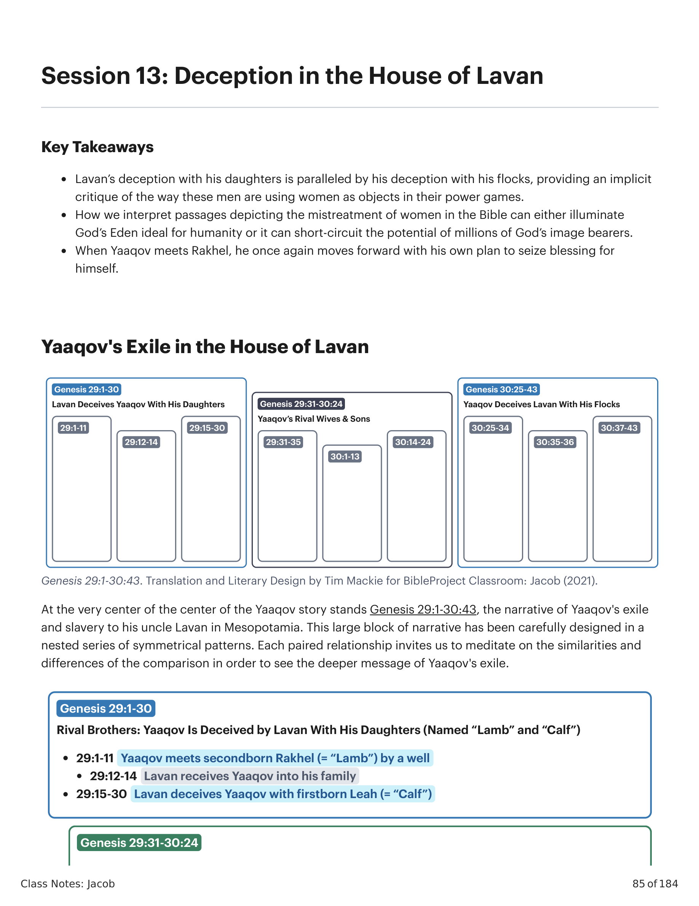
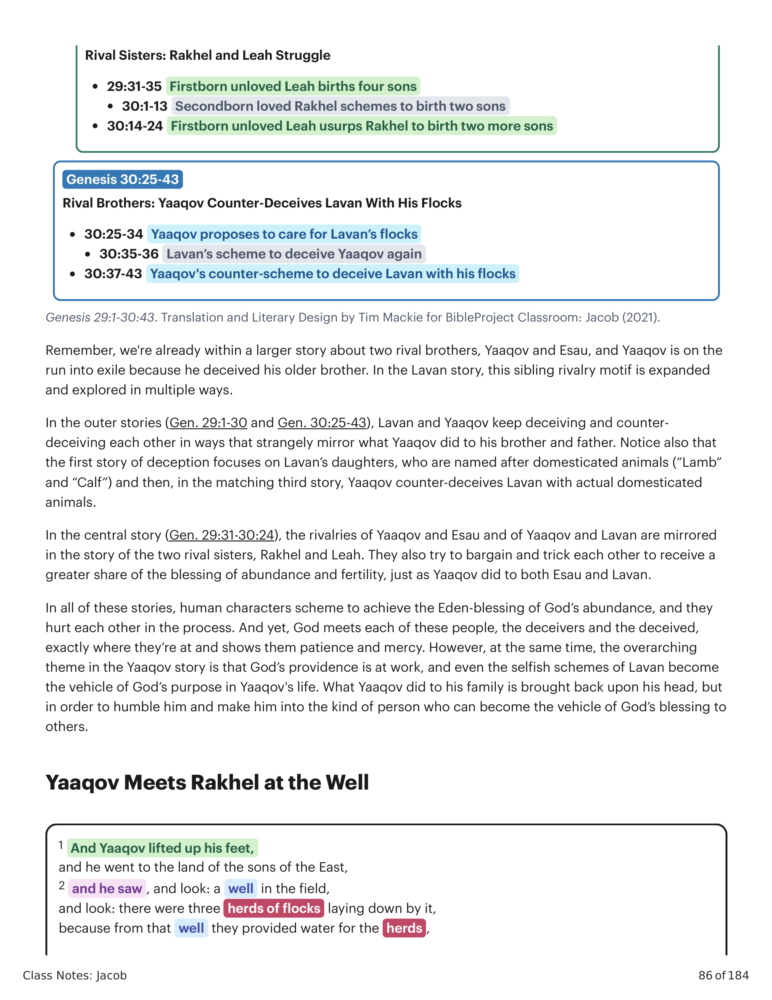
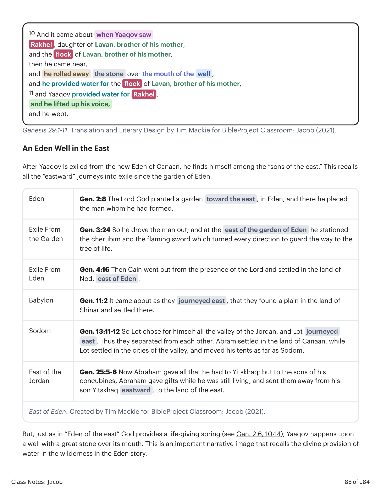
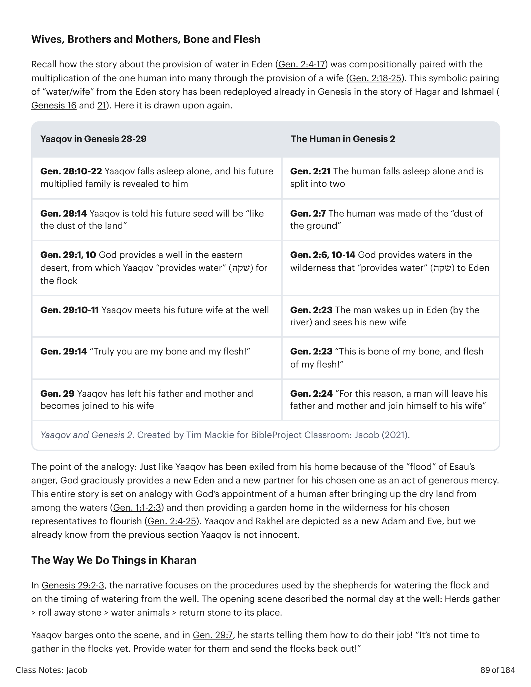

No centro do centro da história de Yaaqov está Gênesis 29:1-30:43, a narrativa do exílio de Yaaqov e sua escravidão a seu tio Lavan na Mesopotâmia. Este grande bloco narrativo foi cuidadosamente desenhado em uma série aninhada de padrões simétricos. Cada relação emparelhada nos convida a meditar sobre as semelhanças e diferenças da comparação para ver a mensagem mais profunda do exílio de Yaaqov. Lembrem-se: já estamos dentro de uma história maior sobre dois irmãos rivais, Yaaqov e Esaú, e Yaaqov está em fuga para o exílio porque enganou seu irmão mais velho.At the very center of the center of the Yaaqov story stands Genesis 29:1-30:43, the narrative of Yaaqov's exile and slavery to his uncle Lavan in Mesopotamia. This large block of narrative has been carefully designed in a nested series of symmetrical patterns. Each paired relationship invites us to meditate on the similarities and differences of the comparison in order to see the deeper message of Yaaqov's exile. Remember, we're already within a larger story about two rival brothers, Yaaqov and Esau, and Yaaqov is on the run into exile because he deceived his older brother.

Gênesis 29:1-30:43. Tradução e Design Literário por Tim Mackie para BibleProject Classroom: Jacó (2021).Genesis 29:1-30:43. Translation and Literary Design by Tim Mackie for BibleProject Classroom: Jacob (2021).
Nas histórias externas (Gn 29:1-30 e Gn 30:25-43), Lavan e Yaaqov continuam enganando e contra-enganando um ao outro de modos que estranhamente espelham o que Yaaqov fez a seu irmão e pai. Observe também que a primeira história de engano foca nas filhas de Lavan, que recebem nomes de animais domesticados ("Cordeira" e "Novilha"), e então, na terceira história correspondente, Yaaqov contra-engana Lavan com animais domesticados de fato. Na história central (Gn 29:31-30:24), as rivalidades de Yaaqov e Esaú e de Yaaqov e Lavan são espelhadas na história das duas irmãs rivais, Rakhel e Leah. Elas também tentam barganhar e enganar uma à outra para receber uma maior porção da bênção de abundância e fertilidade, assim como Yaaqov fez a ambos, Esaú e Lavan.In the outer stories (Gen. 29:1-30 and Gen. 30:25-43), Lavan and Yaaqov keep deceiving and counter-deceiving each other in ways that strangely mirror what Yaaqov did to his brother and father. Notice also that the first story of deception focuses on Lavan's daughters, who are named after domesticated animals ("Lamb" and "Calf") and then, in the matching third story, Yaaqov counter-deceives Lavan with actual domesticated animals. In the central story (Gen. 29:31-30:24), the rivalries of Yaaqov and Esau and of Yaaqov and Lavan are mirrored in the story of the two rival sisters, Rakhel and Leah. They also try to bargain and trick each other to receive a greater share of the blessing of abundance and fertility, just as Yaaqov did to both Esau and Lavan.

Gênesis 29:1-30:43. Tradução e Design Literário por Tim Mackie para BibleProject Classroom: Jacó (2021).Genesis 29:1-30:43. Translation and Literary Design by Tim Mackie for BibleProject Classroom: Jacob (2021).
Em todas essas histórias, personagens humanas tramam alcançar a bênção do Éden — a abundância de Deus — e se ferem no processo. E ainda assim, Deus encontra cada uma dessas pessoas, os enganadores e os enganados, exatamente onde estão e lhes mostra paciência e misericórdia. Contudo, ao mesmo tempo, o tema abrangente na história de Yaaqov é que a providência de Deus está em ação, e até mesmo os esquemas egoístas de Lavan se tornam o veículo do propósito de Deus na vida de Yaaqov. O que Yaaqov fez à sua família recai sobre sua própria cabeça, mas para humilhá-lo e torná-lo a espécie de pessoa que pode se tornar o veículo da bênção de Deus aos outros.In all of these stories, human characters scheme to achieve the Eden-blessing of God's abundance, and they hurt each other in the process. And yet, God meets each of these people, the deceivers and the deceived, exactly where they're at and shows them patience and mercy. However, at the same time, the overarching theme in the Yaaqov story is that God's providence is at work, and even the selfish schemes of Lavan become the vehicle of God's purpose in Yaaqov's life. What Yaaqov did to his family is brought back upon his head, but in order to humble him and make him into the kind of person who can become the vehicle of God's blessing to others.
1 E Yaaqov levantou seus pés, e foi para a terra dos filhos do Oriente. 2 E viu, e eis: um poço no campo, e eis: três rebanhos de ovelhas deitados junto dele, porque dali davam água aos rebanhos, e a pedra sobre a boca do poço era grande. 3 E todos os rebanhos se ajuntavam ali, e removiam a pedra da boca do poço, e davam água ao rebanho, e tornavam a pedra sobre a boca do poço ao seu lugar. 4 E Yaaqov lhes disse: "Meus irmãos! Donde sois vós?" E eles disseram: "Somos de Kharan." 5 E ele lhes disse: "Conheceis Lavan, filho de Nakhor?" E eles disseram: "O conhecemos." 6 E ele disse: "Há shalom para ele?" E eles disseram: "Há shalom." E eis que Rakhel [= "Cordeira"] sua filha vinha com o rebanho. 7 E ele disse: "Eis que o dia ainda é grande, não é tempo de reunir o gado; dai água ao rebanho, e ide apascentar." 8 E eles disseram: "Não podemos (לא נוכל), até que todos os rebanhos se ajuntem; então removemos a pedra da boca do poço, e damos água ao rebanho." 9 E estando ele ainda falando com eles, veio Rakhel com o rebanho que era de seu pai, porque era pastora. 10 E aconteceu que, vendo Yaaqov a Rakhel, filha de Lavan irmão de sua mãe, e o rebanho de Lavan irmão de sua mãe, então se chegou, e removeu a pedra da boca do poço, e deu água ao rebanho de Lavan irmão de sua mãe. 11 E Yaaqov deu água a Rakhel, e levantou a sua voz, e chorou.1 And Yaaqov lifted up his feet, and he went to the land of the sons of the East, 2 and he saw, and look: a well in the field, and look: there were three herds of flocks laying down by it, because from that well they provided water for the herds, and the stone over the mouth of the well was big, 3 and all the herds would be gathered there, and they would roll away the stone from the mouth of the well, and they would provide water for the flock, and they would return the stone over the mouth of the well to its place. 4 And Yaaqov said to them, "My brothers! Where are y'all from?" And they said, "We are from Kharan." 5 And he said to them, "Do y'all know Lavan, son of Nakhor?" And they said, "We do know." 6 And he said to them, "Is there shalom for him?" And they said, "Shalom." And look: Rakhel [= "Lamb"] his daughter was coming with the flock. 7 And he said, "Look, the day is still big, it isn't time for the livestock to be gathered, provide water for the flock, and go, graze." 8 And they said, "We are not able, until all the herds are gathered, then they roll away the stone from the mouth of the well, and then we provide water for the flock." 9 And while he was still speaking with them, then Rakhel came with the flock that belonged to her father, because she was a shepherd. 10 And it came about when Yaaqov saw Rakhel, daughter of Lavan, brother of his mother, and the flock of Lavan, brother of his mother, then he came near, and he rolled away the stone over the mouth of the well, and he provided water for the flock of Lavan, brother of his mother, 11 and Yaaqov provided water for Rakhel, and he lifted up his voice, and he wept.
Depois que Yaaqov é exilado do novo Éden de Canaã, ele se encontra entre os "filhos do oriente". Isto recorda todas as jornadas "para o leste" rumo ao exílio desde o jardim do Éden. Mas, assim como no "Éden do oriente" Deus provê uma fonte que dá vida (veja Gn 2:6, 10-14), Yaaqov depara com um poço com uma grande pedra sobre sua boca. Esta é uma imagem narrativa importante que recorda a provisão divina de água no deserto na história do Éden.After Yaaqov is exiled from the new Eden of Canaan, he finds himself among the "sons of the east." This recalls all the "eastward" journeys into exile since the garden of Eden. But, just as in "Eden of the east" God provides a life-giving spring (see Gen. 2:6, 10-14), Yaaqov happens upon a well with a great stone over its mouth. This is an important narrative image that recalls the divine provision of water in the wilderness in the Eden story.

Leste do Éden. Criado por Tim Mackie para BibleProject Classroom: Jacó (2021).East of Eden. Created by Tim Mackie for BibleProject Classroom: Jacob (2021).
Recordem como a história sobre a provisão de água no Éden (Gn 2:4-17) foi composticionalmente emparelhada com a multiplicação do único humano em muitos através da provisão de uma esposa (Gn 2:18-25). Este emparelhamento simbólico de "água/esposa" da história do Éden já foi reutilizado em Gênesis na história de Hagar e Ismael (Gênesis 16 e 21). Aqui é evocado novamente. O ponto da analogia: assim como Yaaqov foi exilado de sua casa por causa do "dilúvio" da ira de Esaú, Deus graciosamente provê um novo Éden e uma nova parceira para seu escolhido como um ato de misericórdia generosa. Yaaqov e Rakhel são retratados como um novo Adão e Eva, mas já sabemos pela seção anterior que Yaaqov não é inocente.Recall how the story about the provision of water in Eden (Gen. 2:4-17) was compositionally paired with the multiplication of the one human into many through the provision of a wife (Gen. 2:18-25). This symbolic pairing of "water/wife" from the Eden story has been redeployed already in Genesis in the story of Hagar and Ishmael (Genesis 16 and 21). Here it is drawn upon again. The point of the analogy: Just like Yaaqov has been exiled from his home because of the "flood" of Esau's anger, God graciously provides a new Eden and a new partner for his chosen one as an act of generous mercy. Yaaqov and Rakhel are depicted as a new Adam and Eve, but we already know from the previous section Yaaqov is not innocent.

Yaaqov e Gênesis 2. Criado por Tim Mackie para BibleProject Classroom: Jacó (2021).Yaaqov and Genesis 2. Created by Tim Mackie for BibleProject Classroom: Jacob (2021).
Em Gênesis 29:2-3, a narrativa foca nos procedimentos usados pelos pastores para dar água ao rebanho e no timing de regar do poço. A cena de abertura descreveu o dia normal no poço: Rebanhos se ajuntam > removem a pedra > dão água aos animais > retornam a pedra ao lugar. Yaaqov irrompe em cena, e em Gn 29:7 começa a dizer a eles como fazer seu trabalho! "Ainda não é tempo de ajuntar os rebanhos. Dai água a eles e mandai os rebanhos de volta ao pasto!" Em Gn 29:8, os pastores dão uma resposta seca. "Não podemos (לא נוכל) até que todos os rebanhos se ajuntem. É então que removemos a pedra e damos água aos animais." É um modo semi-gentil de dizer a Yaaqov: "Não é assim que fazemos as coisas por aqui." A narrativa imediatamente mostra em Gn 29:9-11 como Yaaqov atropela o costume cultural. No momento em que vê Rakhel, ele desce correndo e faz exatamente o que os pastores disseram que não fazem! Ele remove a pedra e dá água ao rebanho de Lavan. Yaaqov provê água para Cordeira (= Rakhel) e para o rebanho de Lavan. Este é um retrato significativo de Yaaqov como um trambiqueiro descarado que age de sua própria agenda em relação a Rakhel. E lembrem: quando Deus providenciou água no deserto para o Éden, e quando Deus providenciou água para Hagar e Ismael, a água veio por surpresa e no último minuto, quando pensávamos que não havia saída. Nesta narrativa, Deus providenciou um poço e uma futura esposa para Yaaqov. Mas Yaaqov, ansioso para se aproveitar de uma oportunidade, segue e provê a água por si mesmo, em seu próprio cronograma, violando até o costume cultural do oriente.In Genesis 29:2-3, the narrative focuses on the procedures used by the shepherds for watering the flock and on the timing of watering from the well. The opening scene described the normal day at the well: Herds gather > roll away stone > water animals > return stone to its place. Yaaqov barges onto the scene, and in Gen. 29:7, he starts telling them how to do their job! "It's not time to gather in the flocks yet. Provide water for them and send the flocks back out!" In Genesis 29:8, the shepherds give a curt reply. "We're not able (לא נוכל) until all the flocks are gathered. That's when we roll away the stone and water the animals." It's a semi-kind way of telling Yaaqov, "That's not how we do things around here." The narrative immediately goes on in Genesis 29:9-11 to show how Yaaqov bulldozes right over their cultural custom. The moment he sees Rakhel, he runs down and does the very thing the shepherds said they don't do! He rolls away the stone and he waters the flock of Lavan. Yaaqov provides water for Lamb (= Rakhel) and for Lavan's flock. This is a meaningful portrait of Yaaqov as a brash schemer working from his own agenda regarding Rakhel. And remember: when God provided water in the desert for Eden, and when God provided water for Hagar and Ishmael, the water came by surprise and at the last minute. In this narrative, God has provided a well and a future wife for Yaaqov. But Yaaqov, eager to seize on an opportunity, goes ahead and provides water by himself, on his own timeline, even violating the cultural custom of the east.
De que modos o texto sinaliza sua crítica ao maltrato de mulheres?What are some ways the text signals its critique of the mistreatment of women?